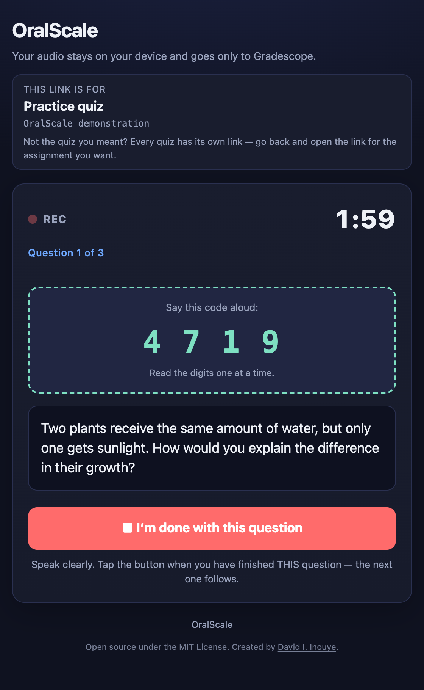

Take your first quiz
with confidence.
From opening the right link to submitting your recording, see exactly what to do—and what to do if you get stuck.
Student quickstart ↗Download student guide · 2-page PDF ↓SHORT ORAL QUIZZES. MEANINGFUL EXPLANATIONS.
OralScale turns a few minutes of speaking into a chance to show what you know. Record in your browser. Submit to Gradescope. Learn from the feedback.
No student app to install. Your audio is uploaded only to Gradescope.

START HERE
Quickstart first. Friendly answers when you need them.
From opening the right link to submitting your recording, see exactly what to do—and what to do if you get stuck.
Student quickstart ↗Download student guide · 2-page PDF ↓Let an AI agent launch your demo course, then generate a question bank from your teaching materials and goals.
Faculty quickstart ↗Download faculty guide · 2-page PDF ↓Say the displayed digits aloud before your answer.
Answer a question in your own words, with a visible timer.
Upload the downloaded .zip to Gradescope and review your feedback.